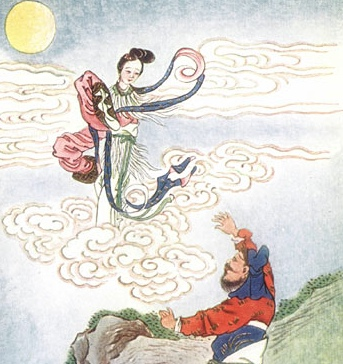

|

Heng-o flies to the Moon |
Myths and Legends of Chinaby Edward T.C. Werner[1922] |
This is the Chinese volume in the always reliable Myths and Legends series, e.g. Babylonia, British, and Celtic. The author consulted mostly Chinese sources to splice together this broad look at Chinese traditional folklore, related to all three of the main Chinese religions, Buddhism, Confucianism and Taoism. Werner covers such topics as the evolution of Chinese cosmology, and the enormous pantheon of native Chinese Gods, Goddesses, and Immortals. This makes a great read for folklore fans and lovers of Chinese lore.
Title Page
Preface
Contents
Chapter I. Racial Origin
Chapter II. Mythology and Intellectual Progress
Chapter III. The Fashioner of the Universe
Chapter IV. The Birth of the Soul
Chapter V. Myths of the Stars
Chapter VI. Myths of Thunder, Lightning, Wind, and Rain
Chapter VII. Myths of the Waters
Chapter VIII. Myths of Fire
Chapter IX. Myths of Epidemics, Medicine, Exorcism, Etc.
Chapter X. The Goddess of Mercy
Chapter XI. The Eight Immortals
Chapter XII. The Guardian of the Gate of Heaven
Chapter XIII. A Battle of the Gods
Chapter XIV. How the Monkey Became a God
Chapter XV. Fox Legends
Chapter XVI. Miscellaneous Legends
Glossary and Index
Advertisements